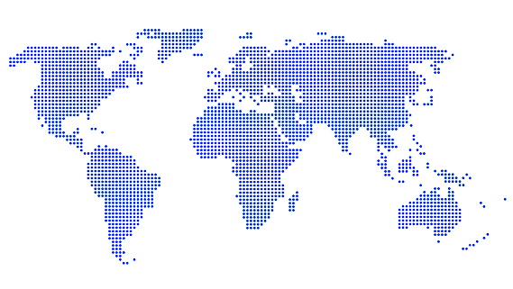
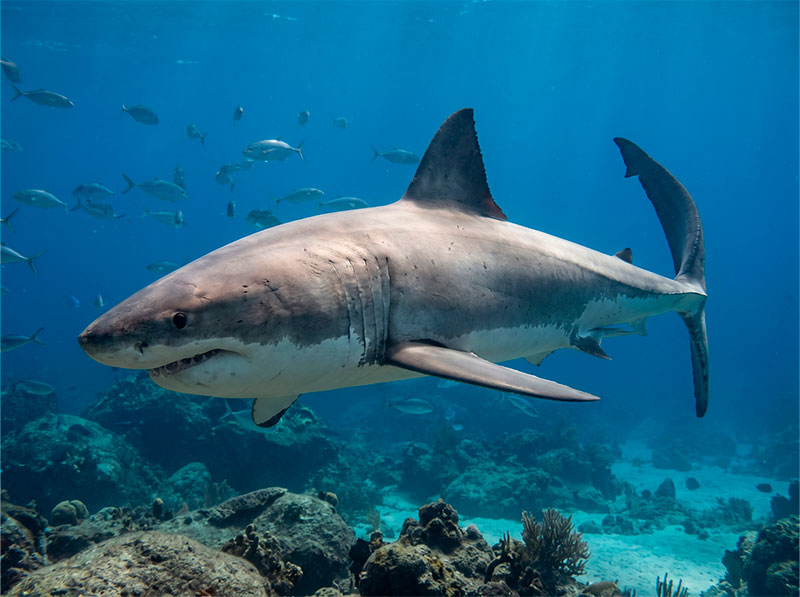

LAMNIFORMES
LAMNIDAE
TUBARÃO-BRANCO
Carcharodon carcharias
IUCN VU
Vulnerável
LAMNIFORMES
LAMNIDAE
Vulnerável
COMPRIMENTO MÁX
até 2.268 Kg
VELOCIDADE MÁX
em sprints curtas
PROFUNDIDADE MÁX
zona mesopelágica
EXPECTATIVA DE VIDA
aproximadamente
O tubarão-branco é um dos maiores predadores marinhos existentes. Possui distribuição mundial, alta capacidade migratória e adaptações únicas que permitem manter temperatura corporal elevada mesmo em águas frias.

Presença confirmada
| NOME COMUM | Tubarão-Branco |
| NOME CIENTÍFICO | Carcharodon carcharias |
| Família | Lamnidae |
| ORDEM | Lamniformes |
| CLASSE | Chondrichthyes |
| CMS | Apêndice II |
Zonas costeiras e oceânicas temperadas e tropicais, prefere águas entre temperaturas de 12ºC e 24ºC.
Distribuição cosmopolita - presente em todos os oceanos do mundo, especialmente em águas costeiras temperadas.
O tubarão branco é um predador de topo, costuma ter uma alimentação bem variada dependendo da região.
| TIPO DE REPRODUÇÃO | Vivíparo |
| PERÍODO DE GESTAÇÃO | 12 meses |
| QUANTIDADE DE FILHOTES | 2-17 indivíduos |
| INTERVALO GESTACIONAL | 2-3 anos |
| MATURIDADE SEX. MACHO | 9-10 anos |
| MATURIDADE SEX. FÊMEA | 14-33 anos |
O tubarão-branco é um dos poucos tubarões conhecidos como endotérmicos regionais, conseguindo manter partes do corpo mais quentes que a água ao redor. Essa adaptação permite que nade em águas frias e tenha maior velocidade e desempenho durante a caça.
25 Curiosidades disponíveis

365 mídias disponíveis